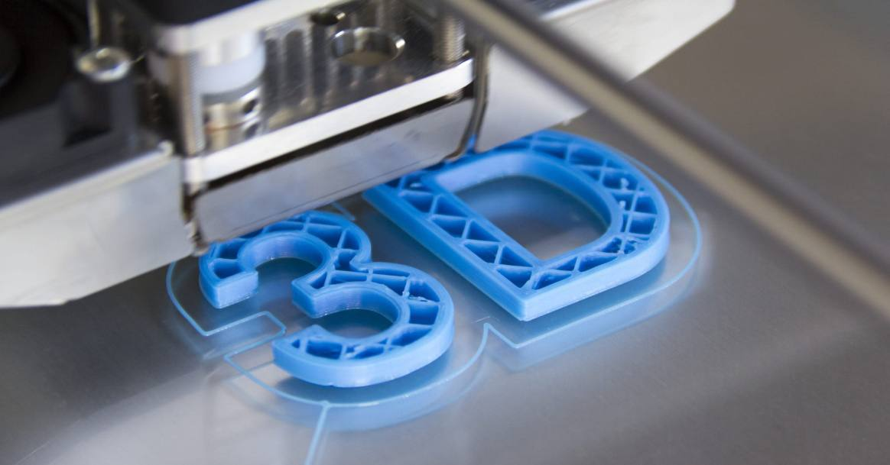
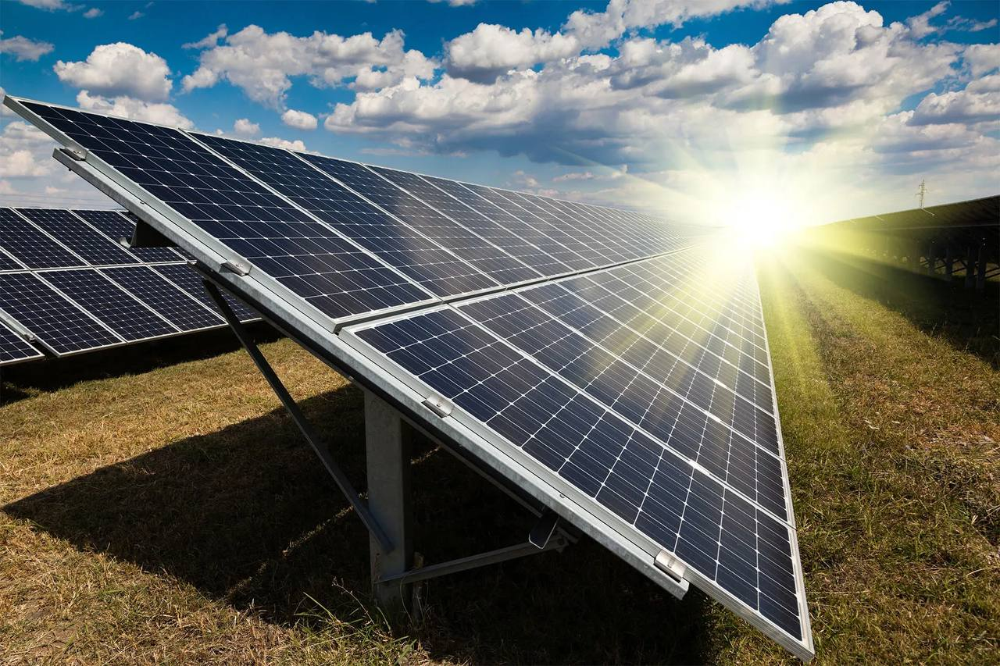
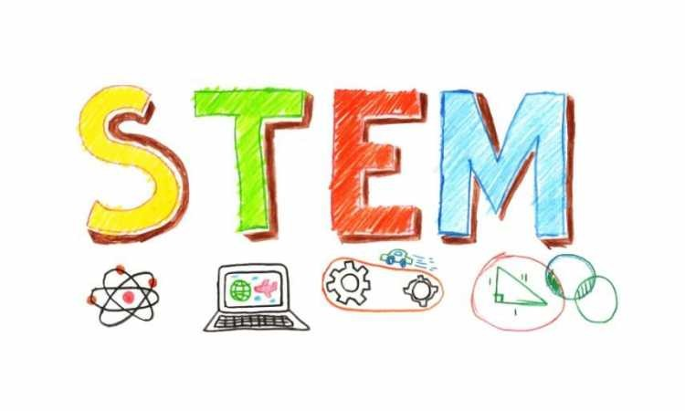

Electrifying the Future with EVs
Electric vehicles, also known as EVs, are a rapidly growing segment in the automotive industry.Electric vehicles are a mode of transportation powered fully or mostly by electricity.Unlike conventional cars that rely on an internal combustion engine through the burning of gasoline or diesel, EVs use an electric motor that draws power from a rechargeable battery pack.
Therefore, they often offer a greener alternative compared to traditional gasoline-powered cars.This sustainable innovation completely aligns with the goals to achieve Net Zero Carbon Emissions by 2050.In this article, I would also like to talk about the advantages of EVs.
First and foremost, of course, are the environmental benefits that come with them. By using electric vehicles or even hybrids, we are able to contribute to cleaner air and reduce carbon footprint, especially when charged with renewable energy sources such as solar energy.
Furthermore, EVs also have lower running or operational costs because electricity is generally cheaper per mile than gasoline. In relation to that, EVs also have fewer moving parts, which leads to lower maintenance costs. Not only that, many governments around the world offer incentives in the form of tax credits, rebates, and more to encourage EV adoption.
After talking about the benefits of EVs, let’s dive into the steps and efforts that can be taken to encourage the use of EVs in daily lives. It is an undeniable fact that the government plays a crucial role in accelerating public charging network expansion. For instance, Malaysia aims to install 10,000 EV charging points by 2025. While significant progress has been made (around 3,354 as of October 2024), this target needs continued efforts. The main focal point should be shifted to highways and major routes for long-distance travel.
Moreover, the government can also partner with petrol stations, hypermarkets, and tourist destinations to install charging stations. This makes it easier for owners of EVs and hybrids to charge their vehicles. By implementing these comprehensive steps, I firmly believe that the world as a whole can accelerate the transition to electric mobility, reaping the environmental, economic, and social benefits that come with widespread EV adoption.
— Written by Chin Shun Yik, an 18-year-old mechanical engineering student from Malaysia with a deep passion in environmental sustainability and designing innovations and systems.
Can we teach AI to smell?
I often find myself thinking about how Artificial Intelligence can already recognize images, understand sounds, speak fluently, and even stimulate thinking. These abilities make it an incredible assistant. But one question kept me up at night: Can we teach it to smell?
Surprisingly, the answer is yes — not in the way humans do, of course, but through data. Recently, researchers at Google conducted an experiment using machine learning to train a model on the molecular structure of over 5,000 compounds.
Their goal? To teach a computer how to recognize and predict scents. The result was something called the Principal Odor Map (POM) — a model that organizes smells into a kind of “map,” where similar scents are placed closer together.
What’s fascinating is that POM could detect similarities between smells that humans wouldn’t normally associate. For instance, apples and cucumbers share remarkably similar chemical signatures, which explains their shared “fresh” scent.
The smell of an old book has molecular overlaps with vanilla. And the scent of almonds is chemically linked to benzaldehyde, a compound also found in cherries and even some cleaning products.
To test the model, researchers gave it 400 scents it had never encountered before and asked it to predict their smell profiles. Then, they asked human participants to do the same. The results? Nearly identical. This means the AI had learned enough about the underlying chemistry of scent to make accurate predictions — just like a person.This kind of breakthrough opens up a world of new possibilities. Imagine choosing perfume online by having your phone detect and simulate the scent, or being able to assess air quality in a different country remotely. In the future, phones and other devices might be equipped with scent detectors capable of identifying food spoilage, gas leaks, or even illness through breath.
Of course, we’re not quite there yet. AI's sense of smell isn’t perfect and still can’t compete with the complexity of the human olfactory system. But the fact that it can already “sense” smells it has never directly encountered — and do so as well as a person — is a major step toward building synthetic senses that could one day rival our own.
Who knows — maybe one day, AI won’t just smell like us, but will help us smell in ways we never could.
— Written by Sophia Rudenko, a 17-year-old student from Ukraine with a deep passion for machine learning and astrophysics.
Natural Mosquito Repellent
Mosquito repellents are products designed to deter mosquitoes and other biting insects from approaching and landing on human skin. These repellents work by emitting certain vapours or chemicals that are unpleasant to mosquitoes, causing them to stay away.
However, the usage of commercially available mosquito coils contains high amounts of chemicals. These chemicals are detrimental and can cause long term effects, especially to our respiratory system.
To overcome this problem, technology needs to be developed to create a new alternative repellent to counter these adverse outcomes. Therefore, the objective of this student project is to provide an alternative non-chemical base mosquito repellent. Some characteristics that we are keen on achieving includes the usage of organic material, emission of low soot and ensuring the product is non-irritant or non-allergen.
Next, let’s get started on the procedure. First of all, we begin by removing excess moisture by drying the base materials such as coconut husks under the sun.
While waiting for the coconut husks to dry, we can also move on with crushing the herbal plants by using a mortar or even a blender to ensure that they are in powder form. For instance, the natural herbs include lemongrass, neem and cloves.
After that, we will mix the herbs with the coconut husks and let them solidify in the oven. Last but not least, we will store them and carry out quantitative analysis on our product.
The quantitative test that was conducted was a soot test. From the test, the amount of soot produced was observed by using grided filter paper. The results conclude that the amount of soot produced by the natural mosquito repellent is lower compared to commercial brands. This stands as a testament that the product is clean and eco-friendly.
Based on basic chemistry knowledge, alkene compounds burn and release more soot than alkanes. This is because the percentage of carbon by mass per molecule in alkenes are higher than alkanes. Therefore, we can certainly apply this concept here, whereby the commercial brand is a fossil fuel in alkene form, whereas the natural repellent is in the form of alkane.
For those looking to go and research further, you could even use other herbs and test their respective effectiveness in repelling mosquitoes. Furthermore, more data could also be collected on the duration of burning.
In conclusion, this product will be able to repel mosquitoes without causing any harm to users nor the environment. This innovation that relies on natural herbs and plant waste will certainly be a better replacement that solves all the issues of commercial mosquito coils.
— Written by Chin Shun Yik, an 18-year-old student from Malaysia planning to pursue mechanical engineering with a deep passion in innovations and systems.
The Revolution of 3D printing

From a niche technology once limited to rapid prototyping, 3D printing or also known as additive manufacturing has advanced into a transformative force across various industries. 3D printing is an “additive” process, a stark contrast to “subtractive” manufacturing which involves cutting away material from a larger block.
The journey of a 3D-printed object begins with a digital blueprint, typically created using Computer-Aided Design (CAD) software.
The model will then be broken down into thousands of thin and horizontal layers. As a result, the files which are often in a G-code format serves as the instruction manual for the 3D printer.
The printer will follow the instructions given, depositing materials such as plastic filament, liquid resin and metal powder one layer at a time. Each new layer is simultaneously fused to the before it. In the end, a physical three-dimensional object that precisely matches the digital design is made. It is undeniable that the true power of 3D printing lies in its versatility and ability to be applied across a variety of fields.
First and foremost, the aerospace industry was an early adopter of the 3D printing innovation as it is able to produce strong and lightweight parts with complex geometries. Engineers are able to consolidate multiple parts into a single and lighter component. This significantly helps in reducing the consumption of fuel of an aircraft.
Moreover, the application of 3D printing can also be seen in the healthcare industry to improve medical procedures. 3D printing allows the creation of custom prosthetics and implants which leads to a better fit and faster recovery. In the future, researchers are also developing new techniques that can be used to create tissues and organs for drug testing and hopefully transplantation.
Last but not least, the automotive industry uses 3D printing for various stages in the manufacturing process. This brilliant innovation can be used to quickly create and test prototypes of new car parts and designs.
As technology continues to evolve, we can certainly expect 3D printing to become an even more integral part of our daily lives, driving further innovation and offering a new era of customization as well as efficiency across the globe.
—Written by Chin Shun Yik, an 18-year-old aspiring mechanical engineering student from Malaysia interested in digital technology and innovations.
Using AI to Optimize Bridge Safety

Bridges are vital components of transportation infrastructure, but their safety is often threatened by age, weather, material fatigue, and increasing traffic loads. Traditional methods for assessing structural health rely on periodic inspections, which are time-consuming, costly, and often limited in scope. In recent years, Artificial Intelligence (AI) has emerged as a transformative tool for improving the monitoring and maintenance of bridge safety — even in student-led research projects.
AI systems can analyze large volumes of sensor data in real time, allowing engineers to detect early warning signs of structural stress or deterioration. For example, accelerometers and strain gauges placed on a bridge can transmit data continuously to a central server. Machine learning algorithms then process this data to recognize patterns, identify anomalies, and predict the likelihood of failure before it happens. One practical application is anomaly detection in vibration signals — if a certain area of the bridge vibrates abnormally under traffic load, it could indicate a developing crack or loosening joint.
A 2023 project by students inspired from the Technical University of Munich involved using convolutional neural networks (CNNs) to analyze high-resolution images of bridges taken by drones. The AI system was trained to detect surface-level damage like rust, corrosion, and cracks. According to their report, the system achieved an accuracy of 92% in identifying surface flaws that human inspectors often miss. This approach not only improves reliability but also reduces the need for dangerous manual inspections.
Another promising use of AI is predictive maintenance. By combining data from multiple sources — including traffic density, weather conditions, and material degradation over time — AI can help schedule optimal maintenance intervals, reducing both costs and the risk of catastrophic failure. A pilot program in South Korea recently used AI to manage 600 bridges. The results were promising: incidents of unexpected structural faults dropped by 35%, and repair costs were reduced by over 20% compared to previous years.
Even at the high school or undergraduate level, students are exploring these possibilities. A group of engineering students in India built a low-cost system using Arduino sensors and Python-based machine learning to detect stress changes in small model bridges. Their prototype was able to alert users in real-time when pressure exceeded safe limits — demonstrating how accessible and impactful this technology can be.
In the future, AI will likely play a central role in structural health monitoring (SHM). With advancements in sensor miniaturization and cloud computing, we can expect these systems to become even more affordable and scalable. For students, this field offers exciting opportunities to work at the intersection of civil engineering, data science, and public safety. By embracing AI now, the next generation of engineers can help build infrastructure that is not only smarter but significantly safer for everyone.
— Written by Zharas Nurgali, a high school student from Kazakhstan interested in AI, civil engineering, and sustainable infrastructure.
Solar Power on a Student Budget

Solar power is often seen as a luxury — something reserved for wealthy homeowners or high-budget institutions. But with the right mindset and a little resourcefulness, students can build their own solar-powered solutions without breaking the bank. In this article, we explore how students around the world, including Kazakhstan, are finding creative ways to make clean energy affordable and educational.
At the core of any solar project is the photovoltaic (PV) panel — a device that converts sunlight into electricity. While commercial solar setups can be expensive, second-hand or small-scale panels are widely available online or through local electronics markets. Many students begin with 10W or 20W panels, which are enough to power LED lights, charge power banks, or run mini-ventilation systems.
One popular project among school science clubs is the creation of a solar charging station. Using a small panel, a voltage regulator, a rechargeable battery, and some basic wiring, students can build a station that charges their phones or calculators. Not only does this save electricity, it also sparks curiosity about circuits, current, and energy storage.
In Almaty, a student-led team designed a solar-powered greenhouse that could function even during Kazakhstan’s cold winters. They used plastic bottles for insulation, black-painted barrels for thermal mass, and solar panels to power a small ventilation fan and light. Their prototype allowed for year-round herb cultivation — all at a cost under $50.
Beyond projects, solar energy opens doors for understanding broader topics like climate change, energy justice, and engineering innovation. For example, rural regions in Kazakhstan often lack stable electricity. Students who understand the basics of off-grid solar systems — including battery storage and inverters — can design low-cost solutions that have real social impact. NGOs and local schools are increasingly interested in student partnerships for these kinds of projects.
Software tools like PVWatts and Tinkercad Circuits allow students to simulate panel output based on sunlight levels, angles, and system size. These tools help users understand how panel efficiency changes with geography, season, and design — knowledge that is essential in real-world engineering.
Importantly, many of these projects align with university entrance portfolios, STEM competitions, and science fairs. The combination of sustainability and technical skill is especially attractive to admissions officers and scholarship committees.
Solar power is more than just a technology — it’s a mindset. When students experiment with solar DIY setups, they’re not just learning physics and electronics. They’re embracing independence, responsibility, and long-term thinking. Whether you’re looking to charge your devices for free or launch a green energy startup, the path starts with curiosity and one small panel.
— Written by Aisulu Darmen, a 17-year-old student from Shymkent passionate about renewable energy and sustainable engineering for underserved regions.
Building a Cardboard Robot Arm

Robotics often seems like a field that requires expensive kits, 3D printers, and expert-level coding. But for many beginner engineers, starting small and simple can be just as rewarding — and just as educational. One of the most accessible entry points into robotics is building a working robotic arm from cardboard. This hands-on project teaches core mechanical principles using affordable materials that can be found in almost any household.
The robot arm consists of several joints — typically shoulder, elbow, and wrist — just like a human arm. The first step is to design the basic layout on paper. Then, using thick cardboard, students can cut out the arm’s components and attach them using metal paper fasteners, skewers, or even hot glue. By maintaining joint mobility, students begin to understand mechanical degrees of freedom and basic kinematics.
For actuation, many students use hydraulic or pneumatic systems made with syringes and flexible tubing. When one syringe is pushed, fluid moves into another syringe connected to the joint, causing it to bend. This creates a working model of hydraulic motion — the same principle used in real industrial robots and machinery. It's a tactile way to learn about pressure, force transfer, and the physics of motion.
A team of students developed a three-fingered cardboard robotic hand powered entirely by water-filled syringes. They fine-tuned the finger lengths and angles for gripping different shapes. Their final version could pick up a pen, hold a plastic cup, and even type short messages on a keyboard. The total cost? Less than $10 — most of it spent on glue and tubing.
What’s powerful about this project is that it merges physics, engineering, and creativity. Students learn about levers, torque, center of mass, and structural integrity — all while building something they can demonstrate. It also gives them a chance to develop problem-solving skills: What do you do when a joint doesn’t move as expected? How do you balance strength and flexibility? These questions lead to real engineering thinking.
For those looking to go further, the cardboard arm can be upgraded with servos and Arduino boards. This introduces basic electronics and programming into the mix. Students can code their arms to move in response to button inputs, light sensors, or even gestures. But even without electronics, the mechanical foundation built through cardboard models provides a solid springboard into more complex robotics projects.
In a world where robotics education is often inaccessible due to cost, DIY models like this one remind us that innovation doesn't need to be expensive. It starts with an idea, a little patience, and a willingness to fail and improve. More importantly, it shows students that engineering is not just about tools — it’s about problem-solving, curiosity, and making things move.
— Written by Daniyar Yessengali, a 16-year-old student from Taraz who loves mechanical design and dreams of working in the aerospace industry.
Python for Structural Calculations

Engineering students are increasingly turning to Python, a beginner-friendly and powerful programming language, to solve real-world problems. In the field of structural engineering, Python offers a flexible and open-source way to perform calculations, visualize stress distributions, and simulate structural behaviors — all without the need for expensive software like MATLAB or ANSYS.
At its core, structural engineering involves analyzing forces and designing components like beams, columns, and trusses to ensure safety and efficiency. These calculations can be tedious by hand, but Python helps automate them. For example, using the NumPy library, students can write scripts that compute shear forces and bending moments along a beam based on various loads. This not only saves time but also allows for easy experimentation with design alternatives.
A student project in Almaty involved building a Python-based tool to analyze cantilever beams under uniform and point loads. The script allowed users to enter beam length, load intensity, and modulus of elasticity, then output deflection and moment diagrams. Visualization was done using Matplotlib — a popular Python library that turns raw data into charts and graphs. This helped students better understand where the maximum stress occurs in a beam and how design changes influence performance.
Python also supports symbolic math through libraries like SymPy. This is useful for solving equations with unknowns — such as determining reactions at supports or solving for deflections. Students can check their hand-written derivations and quickly verify whether their results are correct, a valuable feature during exams or lab assignments.
Beyond statics, students use Python for analyzing truss systems, calculating buckling loads, and simulating harmonic oscillations in dynamic systems. Tools like PyNite (a structural analysis library) offer the ability to model full 2D or 3D frames and get nodal displacements and internal forces. While it may take some time to learn the syntax, tutorials and GitHub repositories make it highly accessible to self-learners.
For many, the appeal lies in Python's low barrier to entry and high ceiling. You can start with basic arithmetic and loops, then move on to solving matrix equations and plotting load diagrams — all with free tools. It also integrates well with spreadsheets and CSV files, so students can analyze large datasets from experiments or simulations with ease.
As engineering becomes more data-driven, coding is no longer optional. Python equips students not just with a technical tool but with a mindset of automation and optimization. Whether it’s for class assignments or real-world design, knowing how to make a machine do your math is an empowering skill — and one that bridges the gap between theory and practice.
— Written by Aigerim Sadykova, an 18-year-old civil engineering student from Almaty who is passionate about structural design and automation in construction.
Intro to ChatGPT for Engineering Students
As engineering students navigate complex topics like thermodynamics, circuits, and mechanics, finding clear and fast answers can be a challenge. That’s where ChatGPT, an AI-powered language model, comes in. While originally designed for conversational use, many students are now discovering how ChatGPT can assist in their academic and project-based work — from generating explanations to debugging code.
ChatGPT works by predicting likely word sequences based on your prompt, which allows it to provide definitions, summarize concepts, and walk you through problem-solving steps. For example, a mechanical engineering student can ask, “Explain the difference between shear stress and normal stress with examples,” and get a response that’s structured in plain English. The AI can also rephrase explanations for different levels of understanding, which is especially helpful when textbooks are too dense or unclear.
At a local STEM club, a group of students used ChatGPT to generate alternative design ideas during a sustainable housing challenge. They asked the model for low-cost insulation materials for harsh winters in Kazakhstan, and it suggested straw bale walls, aerogel sheets, and recycled denim — all supported by brief explanations. Although students had to verify the info, ChatGPT acted like a creative brainstorming partner.
Engineering often involves coding, and ChatGPT can assist here too. For example, when writing a Python program for a statics calculator, students can ask the model for syntax correction or help with logic errors. It doesn’t always get it right the first time, but with good prompts and follow-up questions, ChatGPT becomes a helpful debug companion. Many students report that it saves time and teaches them better ways to write clean, modular code.
Another benefit is formatting. Engineering reports often require structured documentation with proper headings, citations, and technical tone. ChatGPT can help draft abstracts, rewrite passive voice sentences, or suggest formatting for project summaries. Of course, students should still apply their own judgment and check for accuracy — but the AI makes the process faster and smoother.
It’s important to note that ChatGPT doesn’t replace learning. It’s a support tool — not a replacement for understanding concepts, doing calculations, or meeting academic integrity rules. Teachers increasingly recommend using AI tools like ChatGPT as long as students disclose their use and ensure originality.
In Kazakhstan, where access to tutors or technical books can be limited in some regions, AI models provide equalizing support. With internet access and curiosity, students from small towns can now engage with high-level engineering topics at their own pace. ChatGPT helps bridge language gaps too, offering Kazakh- or Russian-friendly explanations when English materials are hard to follow.
In short, ChatGPT empowers engineering students to ask better questions, learn faster, and create with more confidence — as long as it’s used wisely and ethically. Whether you're designing circuits or writing lab reports, it’s like having a study partner who never sleeps.
— Written by Yerzhan Kalyk, 15 year-old student from Pavlodar, who explores the use of AI in education and design thinking.
Basics of CAD Modeling
Computer-Aided Design (CAD) is one of the most essential tools in modern engineering. From aerospace to product design, CAD allows engineers to visualize, simulate, and refine their creations before any physical prototype is built. Learning the basics of CAD modeling gives students a head start in both academic and industry settings — and it's more accessible than ever.
CAD software comes in many forms, with popular programs including AutoCAD, SolidWorks, Fusion 360, and FreeCAD. While each has its own interface and specialties, they all follow the same foundation: sketch → extrude → refine. Students begin by drawing 2D shapes like circles, rectangles, and splines. Then, those sketches are turned into 3D models through operations like extrusion, lofting, and revolving.
One of the key benefits of CAD is precision. Unlike hand-drawn blueprints, CAD allows engineers to define dimensions down to a fraction of a millimeter. This is essential when designing components that must fit together, like gears or enclosures for electronics. CAD also reduces design errors, thanks to constraint tools that keep parts aligned and properly shaped.
At a technical lyceum in Almaty, students used Fusion 360 to design parts for a small robotic vehicle as part of a local robotics competition. They modeled the wheel hubs, chassis, and servo motor brackets, then 3D printed the components. Their vehicle placed third — but more importantly, the team gained real-world skills in digital prototyping and mechanical design.
CAD modeling is also important for interdisciplinary projects. In architecture, CAD helps visualize building layouts, lighting, and HVAC systems. In biomedical engineering, students use it to model prosthetics and medical tools. For makers and hobbyists, CAD allows personalized creations — from phone holders to drone parts — to be fabricated with 3D printers or CNC machines.
For beginners, cloud-based tools like Tinkercad or Onshape are excellent starting points. These platforms run in a browser and don't require high-end computers. They offer drag-and-drop interfaces, tutorials, and easy export options for 3D printing. As students advance, they can transition to more complex software that supports assemblies, simulation, and rendering.
Learning CAD modeling doesn't just build technical skill — it changes how students think. They begin to visualize objects in layers and steps, consider how forces act on structures, and break problems into sequences. It also fosters creativity: designing a drone frame, a solar lamp, or a bridge span becomes an act of problem-solving and imagination.
For any student interested in engineering, architecture, or product design, CAD is a gateway to making ideas real. It’s not about being perfect from the start — it’s about exploring possibilities, building digital confidence, and preparing for a future where design and innovation go hand in hand.
— Written by Nurai Imanbek, a 17-year-old STEM student from Kokshetau, passionate about robotics, CAD, and engineering for social impact.
The role of STEM in solving energy and environmental problems

STEM, which stands for Science, Technology, Engineering, and Mathematics, plays a very important role in addressing the world’s energy and environmental challenges. As the global population grows and the effects of climate change become more serious, we need smart and sustainable solutions. These solutions are often created by people working in STEM fields.
Science helps us understand the problems we are facing. For example, scientists study how greenhouse gases like carbon dioxide cause global warming, how pollution affects human health, and how ecosystems are being damaged. With this knowledge, we can take action based on evidence and real data.
Technology gives us tools to reduce our negative impact on the environment. Solar panels, wind turbines, electric cars, and smart energy systems are all examples of how technology helps us use energy in cleaner and more efficient ways. These innovations reduce our dependence on fossil fuels, which are the main cause of pollution and climate change.
Engineering is used to design and build real-world systems. Environmental engineers work on projects like recycling systems, water purification, clean energy plants, and green buildings. Their work turns scientific ideas into practical solutions that improve lives.
Mathematics is also essential. It helps predict future environmental conditions, analyze climate data, and improve energy use. Without math, we wouldn’t be able to measure the effects of our actions or plan for the future.
In conclusion, STEM is not just about school subjects — it’s about creating a better world. The energy and environmental problems we face are complex, but with the help of STEM, we can develop smart, innovative, and sustainable solutions for the planet and humanity.
— Written by Zangar Abdikarim, a student from Kyzylorda, passionate about engineering and music.
The Future of 3D-Printed Housing in Developing Countries
3D-printed housing is emerging as a revolutionary solution to the global housing crisis, especially in developing countries where affordable, durable, and fast construction is crucial. Traditional construction methods are often time-consuming, costly, and environmentally intensive. In contrast, 3D printing allows engineers to construct homes in under 24 hours using locally sourced or recycled materials, drastically reducing labor and material waste.
This technology is especially promising in regions with high population growth and poor infrastructure. Companies like ICON and WASP have already demonstrated its potential by printing entire communities in Latin America and Africa. The next step is adapting this innovation to local climates and seismic conditions, ensuring durability and energy efficiency.
The major challenges remain: access to power, technical know-how, and material standardization. But as engineers work on mobile, solar-powered printers and AI-based design optimization, these obstacles are becoming surmountable. For students in civil engineering, this field offers the opportunity to lead a humanitarian and technological revolution — bringing sustainable shelter to those who need it most.
— Written by Zangar, a student from Kyzylorda, passionate about sustainable engineering solutions.
Innovations in Earthquake-Resistant Structures
In regions vulnerable to seismic activity, engineering plays a life-saving role. Traditional construction techniques often fail during earthquakes, leading to catastrophic losses. However, recent innovations in earthquake-resistant structures are changing this narrative. Modern approaches such as base isolation, seismic dampers, and shape memory alloys allow buildings to flex and absorb shockwaves, minimizing structural damage.
Engineers are also leveraging AI and real-time sensors to monitor building health and predict stress points before failure occurs. Another innovation is bamboo-reinforced concrete — a low-cost, sustainable material that can improve flexibility in poor regions. In Japan and Chile, countries familiar with earthquakes, such methods have already saved thousands of lives.
For developing countries, the challenge is affordability and education. Therefore, engineers must not only design safer structures but also teach local builders to apply simple yet effective techniques. Earthquake-resistant engineering is no longer just about technology; it’s about accessibility, community education, and ethical responsibility.
— Written by Zangar, a student from Kyzylorda, passionate about sustainable engineering solutions.
Using Waste Materials in Road and Bridge Construction
As the global population increases, so does waste — but civil engineers are turning this problem into a solution. Using waste materials like plastic, rubber, and fly ash in road and bridge construction is an innovative and sustainable approach. These materials improve durability, reduce cost, and significantly cut carbon emissions.
For instance, plastic roads are more resistant to weathering and potholes. In India, over 100,000 km of roads have already been built using plastic waste. Similarly, rubber from tires can be used in asphalt to improve flexibility and noise reduction. Fly ash, a byproduct of coal combustion, enhances the strength of concrete when used as a supplement.
Implementing these materials in countries like Kazakhstan can reduce landfill usage and improve rural road infrastructure. However, the key challenge is standardizing quality and ensuring safety. Civil engineers must collaborate with environmental scientists and policymakers to develop regulations and testing protocols.
This field combines engineering with environmentalism — offering the chance to build infrastructure while cleaning the planet.
— Written by Zangar, a student from Kyzylorda, passionate about sustainable engineering solutions.
Water Management Engineering in Arid Regions
Water scarcity is one of the most critical challenges facing arid regions, including much of Central Asia. Civil engineers are at the forefront of designing systems to capture, store, and distribute limited water resources more efficiently. Key solutions include rainwater harvesting, underground reservoirs, drip irrigation systems, and greywater recycling.
In Kazakhstan, especially in places like Kyzylorda, where desertification is a threat, sustainable water management is essential for agriculture, health, and industry. Engineers are now using satellite data and AI to model groundwater supplies and predict drought patterns. Solar-powered desalination plants are also becoming more viable as costs drop.
One of the biggest challenges is leakage in outdated infrastructure — sometimes losing over 30% of water before it reaches users. Engineers must design low-cost, scalable systems and promote community-level management to make solutions effective.
Water management isn’t just a technical problem; it’s a question of survival and equity. This is an area where engineering directly saves lives.
— Written by Zangar, a student from Kyzylorda, passionate about sustainable engineering solutions.
How Civil Engineers Can Reduce Urban Heat Island Effects
Urban Heat Island (UHI) effects — where cities are significantly hotter than surrounding rural areas — are intensifying due to climate change. Civil engineers can help solve this by designing cities with sustainability in mind. Green roofs, reflective pavements, increased vegetation, and ventilated street designs are some key tools.
In cities with concrete-heavy environments, surfaces absorb and trap heat. Using high-albedo (light-colored) materials for roofs and roads can reduce surface temperatures by up to 15°C. Adding trees and green corridors not only cools the air but also improves mental health and air quality.
Kazakhstan’s cities like Almaty and Nur-Sultan are beginning to face UHI due to urban expansion. Engineers have the responsibility to integrate passive cooling strategies into new developments and retrofit older areas.
This challenge is interdisciplinary, requiring collaboration between civil engineers, urban planners, and climate scientists. But for those who rise to the task, there is the opportunity to redesign cities to be cooler, greener, and more livable — especially for the most vulnerable populations.
— Written by Zangar, a student from Kyzylorda, passionate about sustainable engineering solutions.